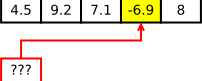
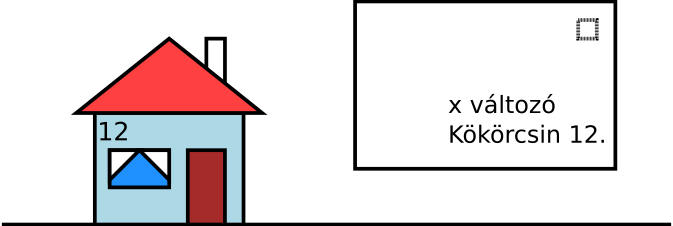
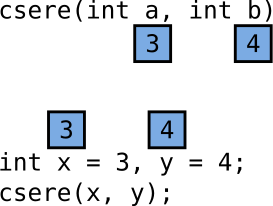
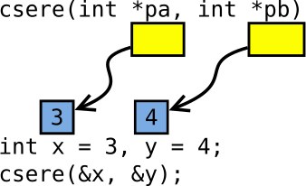
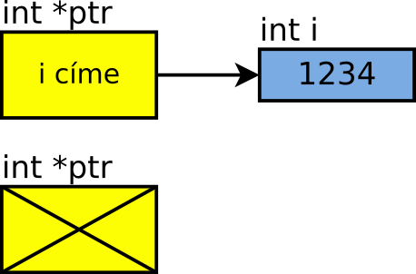
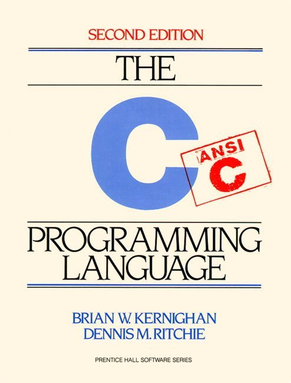

Feladat: írjunk függvényt, amely egy számot megkeres egy tömbben!
Gondoljuk át előbb, mit jelent ez a tömören megfogalmazott feladat!
A függvénynek nyilvánvalóan paramétere lesz a vizsgálandó tömb
és a keresett szám, visszatérési értéke pedig a megtalált elem indexe.
A megtalált tömbelem indexét, azaz a találat helyét kell visszaadnunk,
különben értelmetlen lenne a megoldásunk. A „keressük meg a 3.14-et” feladatra a helyes
válasz az, hogy „a 94. helyen van”, nem pedig az, hogy „3.14”. Ezért
a visszatérési értékünk egy int lesz.
Fel kell készülnünk arra az eshetőségre, hogy a keresett szám nincsen benn
a tömbben. A függvénynek ilyenkor is vissza kell térnie valamivel. Valahogyan
a hívó tudtára kell adnunk azt, hogy nincs találat. Erre egyik lehetőség
az, ha valamilyen speciális értéket használunk, ami nem lehetne semelyik tömbelem
indexe sem. Például a -1.
A függvénynek át kell adnunk paraméterként a tömböt. Ilyesmivel eddig nem
találkoztunk. Ezt a double tomb[], int meret paraméterekkel tudjuk
megtenni. Hogy pontosan mit jelent ez a fejléc, arról lentebb lesz szó –
egyelőre fogadjuk el, hogy így kell írni ezt C-ben.
Ha ezt is tudjuk, a függvényt már könnyen megírhatjuk:
int hol_van(double tomb[], int meret, double keresett) {
for (int idx = 0; idx < meret; ++idx)
if (tomb[idx] == keresett)
return idx;
return -1;
}Lássuk, hogyan kell használni!
int main(void) {
double szamok[5] = { 4.5, 9.2, 7.1, -6.9, 8 };
int idx = hol_van(szamok, 5, -6.9);
if (idx != -1) {
printf("%d. elem, értéke: %f", idx, szamok[idx]);
szamok[idx] *= -1;
} else {
printf("Nincs benne ilyen.");
}
}A függvénynek tehát megmutatjuk a tömböt, és közöljük vele a tömb méretét is,
továbbá a keresett számot. A hívás eredménye pedig a megtalált elem indexe,
vagy -1.
Az indexet magát is ki tudjuk írni: idx, de ha kell, a tömb
elemére is hivatkozhatunk vele: szamok[idx]. A visszakapott
számmal indexelve a tömböt, látjuk a megtalált tömbelemet magát. Ha olyan a
további feladatunk, a megtalált elemet akár módosíthatjuk is, pl. az ellentettjére:
szamok[idx] *= -1, vagy kicserélhetjük egy másik értékre: szamok[idx] = 10.2.
Látjuk, hogy a tömb és az index együtt megjelölnek egy double típusú változót
a memóriában. A szamok[idx] kifejezésben a szamok mondja meg, melyik
tömbről van szó, és a idx pedig azt, hogy annak hányadik eleméről.
Az index önmagában kevés (melyik tömbről van szó?), a tömb megjelölése is kevés (annak hányadik eleméről van szó?)
ahhoz, hogy egy konkrét elemet hivatkozzunk. Mindkettőre szükség van.
tömb és index → hely
Fölmerülhet a kérdés, van-e esetleg olyan eszközünk, amely önmagában képes lenne egy
bizonyos tömbelem meghivatkozására. Ha lenne egy ilyen eszközünk, akkor megoldhatnánk az előző keresős feladatot úgy is,
hogy a kereső függvény egy hivatkozással tér vissza: hivatkozással a megtalált double típusú tömbelemre.
Ezt a gondolatmenetet általánosítani is tudjuk: egy olyan eszközt szeretnénk, amellyel tetszőleges változót megjelölhetünk, hivatkozhatunk, legyen az akár egy tömb valahányadik eleme, vagy egy önálló változó.

mágikus valami → hely
Mint az mindjárt kiderül, C-ben van ilyen. scanf("%lf", &x); – ismerős ez az első óráról?
Itt pontosan ez történik; egy double típusú változót jelölünk meg a scanf számára, hogy oda
írja a beolvasott számot.
Lássuk, mi is ez a típus!
Egy memóriahelyet hivatkozó típus neve: mutató (pointer). A mutatókat * operátorral
jelöljük – lásd a p változó definícióját lentebb. A double* típusú mutató arra képes, hogy hivatkozzon
egy double típusú változóra a memóriában. A mutatón keresztül közvetetten a mutatott változót is elérhetjük; ez az ún.
indirekció.
double neg[5] = { -4.5, -9.2, -7.1, -6.9, -8 };
double poz[5] = { 9.3, 78, 7, 0.01, 4.6 };
double *p; // pointer típusú változó
p = &neg[1];
printf("%f\n", *p); // -9.2
p = &poz[3];
*p = 5.7; // a poz[3]-at módosítja
scanf("%lf", &poz[2]);A cím előállítása a címképző & (address of) operátorral történik. A fenti kód egyik sorában a
neg[1], másik sorában pedig a poz[3] tömbelem címét képezzük az operátorral. A legalsó
sorban pedig a poz[2] elem címét, és ezt a scanf() kapja paraméterként.
A pointer által hivatkozott változót az indirekció * (indirection) operátorral érjük el: *p.
Ez ilyenkor teljesen ugyanúgy viselkedik, mintha az eredeti változóról beszélnénk; az indirekció feloldása után írhatjuk,
olvashatjuk azt a változót, amelyre a mutató hivatkozik.
double *p;– mutató (pointer) típusú változó&x– címképző operátor*p– indirekció, dereferálás
Elnevezések, műveletek
double *p;– mutató (pointer) típusú változó definíciója, ami egydoubletípusú adatra mutat (rövidebben egydouble*típusú,pnevű változó)p = &x;– címképző operátor használata, és a kapott cím bemásolásap-be*p = 3.4;– indirekció, dereferálás, apáltal mutatott változó kezelése
A pointerekre a Prog1-ben a legtöbbször angol nevükön fogunk hivatkozni.
A * deklarációkban és kifejezésekben
Néhány megjegyzés a * operátor használatával kapcsolatban – ezek olyan „apró betűs” dolgok, amikre érdemes
külön felhívni a figyelmet.
Először is: a * operátor kétféle helyen is állhat, deklarációban és kifejezében.
void novel(double *sz) { // deklaráció
*sz += 10; // kifejezés
}int *p = ...; // deklaráció
printf("%d", *p); // kifejezés- Deklarációban
típus *p: pointer típusú változó és paraméter. - Kifejezésben
*p: dereferálás, elérjük a mutatott adatot.
Vegyük észre, hogy mindkét esetben a kódban a *p vagy *sz karaktersorozatot látjuk.
Csak míg az egyik helyen épp deklarálunk vagy definiálunk valamit (egy változót, egy függvényparamétert), a másik helyen
már egy meglévő pointert használunk.
Másodszor: egy sorban több változót létrehozhatunk, amik akár lehetnek vegyesen számok, pointerek és tömbök:
int tomb[5], *p1, *p2, tav;Ebben a sorban négy változó jön létre egyszerre (tomb, p1, p2, tav),
amelyeknek mind valahogyan int-ekhez van közük. Nevezetesen: megfelelő módon használva a változókat, mindegyik által
egész számokhoz juthatunk. Hogy hogyan jutunk el az int-ekhez, azt pedig a változók neve mellett használt operátorok
adják meg. A négy változó definícióját megadó sor magyar nyelvű olvasata tehát az alábbi:
int– változókat hozunk létre, amelyekint-ekkel kapcsolatosak.tomb[5]– az első atombnevű változó, amelyen az indexelő[]operátor használható (tehát ez egy tömb), és azt használva kapunkint-eket. Teháttombtípusaint[5], azazint-ek 5 elemű tömbje.,– ezen kívül...*p1– szeretnénk létrehozni egyp1nevű változót is, amelyen a dereferálás*operátorát használva jutunk egyint-hez. Ígyp1típusaint*, azazint-re mutató pointer.,– ezen kívül...*p2ugyanígy.,– ezen kívül...tav– kérünk még egytavnevű változót is, amin semmiféle operátort nem kell használni, hogyintlegyen, tehát önmaga egyint.;– és most ennyi.
Az elv lényege az, hogy C-ben a változók típusát a használat módja alapján kell megnevezni. A deklarációban megadjuk
azt, hogy a változón milyen operátorokat használva jutunk el a megadott típushoz. Szokás néha pointerek esetén a *-ot a
típus neve mellé tenni deklarációban (definícióban):
int* p1;
int* p2 = &x;Azonban ezt csak akkor érdemes így használni, ha soronként csak egy változót hozunk létre. A * így is csak az őt követő
változóra érvényes. Tehát a következő sorban nem két pointert, hanem egy p nevű pointert és egy i nevű
egész számot hozunk létre, és ez nagyon-nagyon félrevezető:
int* p, i;A gép nem foglalkozik vele, hova tettük a szóközt, számára az int* p, i; és az int *p, i; teljesen
egyenértékű. A típus neve mellé tett *-gal gyakrabban találkozunk függvények paraméterezésekor, ahol minden
paraméternek külön meg kell adni a típusát, és a visszatérési érték is egyetlen típus. Az alábbi függvény három pointert
kap paraméterként, és pointerrel tér vissza:
char* fgv(double* x, int* a, char* c);Nézzünk meg részletesen az új nyelvi elem működését! Miért hívjuk címeknek is a pointer típusú változókban tárolt értékeket?
A számítógép memóriájának rekeszei, bájtjai meg vannak számozva. A processzor, amikor szeretne egy változóban tárolt értéket kiolvasni, vagy szeretné módosítani azt, akkor a változó helyét jelző memóriacím (memory address) segítségével hivatkozza meg. Innen tudja a memória, hogy melyik tárolt bájtot kell előszednie, vagy hogy hova tegye a megjegyzendő adatot.
Amikor pointereket használunk a programunkban, tulajdonképp ezekkel a címekkel dolgozunk. A pointer belső ábrázolása egyszerűen
a memóriacím. Az &x (address of x) kifejezéssel tudhatjuk meg egy változó memóriabeli helyét: azt a címet kapjuk
meg ezáltal, ahova a fordító a memóriában elhelyezte az x változót. Ez hasonló értelmű, mint a hétköznapi értelemben
vett postai cím. Ez mutatja a postásnak, hogy hol van az a hely, ahova a levelet vinnie kell.
A memóriacím akár eltárolható egy változóban is, aminek természetesen mutató (pointer) típusúnak kell lennie. Az előző
példához hasonlóan, a következő kódrészletben is ilyen van. A ptr nevű változó, amely double* típusú
mutató lévén, pont ilyet tud tárolni, azt, hogy mi a címe a program valamelyik double típusú változójának.
double x;
double *ptr;
ptr = &x; // cím képzése
*ptr = 3.14; // a mutatott változóAz utolsó sor *ptr kifejezése a ptr által mutatott változót adja. A kifejezés kiértékelése során a
ptr nevű változóból kiolvasódik a memóriacím, utána pedig az így kapott memóriacím által hivatkozott helyen tárolt
változóval dolgozunk tovább, mintha csak az eredeti nevén neveztük volna. Mivel a ptr a fenti példában az
x változóra mutat a ptr = &x értékadás miatt (lásd a rajzot), *ptr-t írva tulajdonképp
az x-ről beszélünk. A címet gyakran hivatkozásnak, referenciának (reference) is szokás nevezni. Ezért mondják a
* operátorra, hogy dereferál (dereference); általa már a mutatott változót látjuk.
Figyeljük meg, hogy a * karaktert a fenti kódban két helyen is használjuk. Egyrészt deklaratív helyen, vagyis egy
változó típusának megadásakor, másrészt kifejezésben. Deklaratív helyen, azaz a double *ptr sorban a *
azt jelenti, hogy a nevezett ptr változó egy pointer lesz. Kifejezésben pedig, a *ptr = 3.14 jelentése
az, hogy a címet tartalmazó ptr változót dereferáljuk, és az általa mutatott memóriahellyel dolgozunk, oda írjuk be a
számot. A két jelentés persze nincs távol egymástól: az előbbinél megmondjuk, hogy hogyan fogjuk használni ptr-t, az
utóbbi pedig a konkrét használata.
Egy értékadásnál és egy inicializálásnál viszont ez elég nagy különbséget jelent. A fenti *ptr = 3.14; sorban a
pointer által mutatott helyen tárolt double változó kap új értéket; ott a * a meglévő pointer
dereferálását jelenti. Ha lenne egy double *ptr = &x; sorunk, abban a létrejövő pointert inicializálnánk úgy, hogy
az x változóra mutasson. Tehát a * a létrejött változó típusát adja meg ebben az esetben, és a létrejövő
pointer kap értéket. Megtévesztő lehet, mert mindkét sorban szerepel a *ptr = karaktersorozat... Ezt meg kell szokni.
Az elején sokat segít, ha külön sorba írjuk a pointer létrehozását és a változóra mutatást, ahogy a fenti példában is szerepel.
Az említett két operátor, a * dereferáló és az & címképző operátor
precedenciája viszonylag magas. A jobb oldalon álló (indexelő [], függvényhívó () stb.) operátorokénál
alacsonyabb, azonban minden kétoperandusú aritmetikai műveletnél (pl. +, - stb.) magasabb.
A precedencia fogalmáról egy másik előadásban van szó.
Lényegében azt adja meg, melyik operátor és operandus tartozik össze. Mint ahogy matematikában a szorzás és az összeadás: a 3
+ 4 * 5 kifejezésben a szorzás „erősebb”, magasabb a precedenciája, ezért 3 + (4 * 5)-ként értelmezzük.
Mutató típusú változók
Pointer típusú változót úgy definiálunk, hogy a definícióban egy *-ot teszünk a változó neve elé, mint pl. a
double *p; sorban. A pointer típusához hozzátartozik a mutatott változó típusa is, hiszen az általa mutatott hely
hivatkozásakor tudnia kell a fordítónak azt, hogy milyen típusú érték található ott – egyáltalán hány bájtból álló adatot kell
kezelni. A pointer a program futása során tetszőlegesen másik változókra állítható át, ha azok a változók megfelelő típusúak. A
fenti példában a mutató típusa double*, ezért a program bármelyik double típusú változójának címét
tárolhatná. A pointer típusú változó maga is egy teljesen szokványos változóként viselkedik: értéket kell adni neki használat
előtt! A pointerek pedig a szokványos módon átadhatók függvénynek paraméterként, és lehetnek függvények visszatérési értékei
is.
Címek és mutatott értékek: példaprogram
Az alábbi programban a p pointert hol az egyik, hol a másik változóra állítjuk be.
Így a *p kifejezés kiértékelésével hol az egyiket, hol a másikat érjük el.
#include <stdio.h>
int main(void) {
double x = 5.6;
double y = 10.9;
double *p;
p = &x;
printf("p = %p \n", p);
printf("*p = %g \n", *p);
printf("\n");
p = &y;
printf("p = %p \n", p);
printf("*p = %g \n\n", *p);
return 0;
}p=0x7fff48732580 *p=5.6 p=0x7fff48732588 *p=10.9
Egy pointer értékét, amely a memóriacím maga (vagyis a fenti példában az
x és y helye a memóriában), a printf()-fel a %p
konverzióval lehet kiírni. Ez akkor lehet jó, ha a programunkban hibát keresünk. A
pointer értéke egyébként általában nem más, mint egy szám, a hivatkozott memóriarekesz sorszáma.
Ugyan a scanf %p képes beolvasni egy pointert, de azzal sokra
nem megyünk. Nincs értelme pl. kiírni egy fájlba egy pointert és újra használni a program későbbi
újrafuttatásánál, hiszen minden egyes futtatáskor máshova kerülhetnek a memóriában a változók.
Próbáld ki, futtasd le többször a fenti programot!
Mire jók ezek a mutatók? Például ezekkel el tudjuk érni azt, hogy a függvények módosítani tudják a nekik átadott változók értékét.
Legyen a feladatunk egy olyan függvényt írni, amely két egész típusú változó tartalmát megcseréli.
void csere(int a, int b) {
int temp;
temp = a;
a = b; // nem x és y változik!
b = temp;
}
int main(void) {
int x = 3, y = 4;
csere(x, y);
printf("%d,%d", x, y); // 3,4
}érték szerinti paraméterátadás
void csere(int *pa, int *pb) {
int temp;
temp = *pa;
*pa = *pb; // x és y változik!
*pb = temp;
}
int main(void) {
int x = 3, y = 4;
csere(&x, &y);
printf("%d,%d", x, y); // 4,3
}cím szerinti paraméterátadás
Az első kódban egy hibás próbálkozás látható. Mint tudjuk, a C nyelvben érték szerinti paraméterátadás történik, ami azt
jelenti, hogy a függvény a hívás helyén megadott kifejezések értékét, kiszámított eredményét kapja meg. Emiatt a
csere(x, y) függvényhívás azt jelenti, hogy ki kell olvasni az x és y változók tartalmát, és
az ott tárolt számokat átadni a függvénynek. Nem a változókat, hanem a számokat! Az átadott két szám, a 3 és a 4 a két
paraméterbe, azaz a két lokális változóba másolódik, amelyek tartalmát pedig a függvény hiába cseréli meg. Az két másik változó,
amelyeknek a módosítása nincs hatással az eredeti két változó értékeire.
A második függvény már működik, mert az indirekciót használ. Ez azt jelenti, hogy a híváskor a függvény nem a változók értékét, hanem a változók helyét, azaz címét kapja meg paraméterként. Tehát a hívással nem két számot adunk neki, hanem rámutatunk két rekeszre a memóriában: „az egyik változó itt található a memóriában, a másik ott, ezek tartalmát cseréld meg!” Így nem jön létre a hívás idejére két új egész típusú változó, hanem a függvény a hívó által megadott két eredeti változón dolgozik.
A második függvényben a paraméterek típusai: int*. Ez az előzőek alapján egy int változó
helyére mutat a memóriában, máshogy fogalmazva, a mutatott változó címét tárolja. A függvény ezen a mutatón
keresztül közvetetten, indirekt módon látja az eredeti változót.
A fenti módszert legtöbbször pongyolán cím szerinti paraméterátadásnak nevezzük. Azonban tudni kell, igazából
ilyenkor is érték szerinti paraméterátadás történik. A csere() függvény ilyenkor is mindent másolatként kap; annak a
pa nevű pointerében van egy másolat az x változó & operátor segítségével lekérdezett
címéről, a pb nevű paraméterben pedig egy az y változó lekérdezett címéről. Vagyis az &x
és &y kifejezések értékeit tárolják a pointerek, nem pedig a változók értékeit. Ezek viszont címként a
main() változóira mutatnak, a dereferálás után az eredeti x és y változókat lehet elérni és
akár megváltoztatni.
Nézzük meg egy kicsit alaposabban, mi is történik akkor, amikor egy tömböt átadunk egy függvénynek! Ilyenkor ugyanis nem a tömb adódik át paraméterként, hanem egy pointer.
Mivel a tömbelemek egymás után helyezkednek el a memóriában, a címeik kiszámíthatóak!
int tomb[5];
int *p1, *p2;
int tav;
p1 = &tomb[0]; // kezdőelem ptr
p1 = tomb; // így rövidítjük
p2 = &tomb[4] - 1; // tomb[4-1] címe
tav = p2 - p1; // távolság: 3A pointeraritmetika azt jelenti, hogy memóriacímekkel végzünk számításokat. Ennek tömböknél van értelme, hiszen ezáltal a tömb kezdőcímének és a típusának ismeretében meghatározható az egyes elemek címe. (Ahogyan azt is meg tudjuk mondani, mi a szomszédos ház címe.) Ezt a kódban úgy jelöljük, hogy a pointerhez hozzáadunk egy egész számot – azt a számot, hogy a tömbben a címtől számítva hányadik elem címére vagyunk kíváncsiak. A hozzáadás a tömb vége felé, a kivonás a tömb eleje felé való mozgást jelent.
Két pointert akár ki is vonhatunk egymásból, hogy megkapjuk a közöttük lévő távolságot (ugrásszámot). Sőt még a
<=, > stb. operátorokat is használhatjuk. Természetesen ezeknek csak akkor van értelme, ha a két
pointer ugyanazon tömb belsejére mutat.
Emiatt is fontos a pointerek típusa. A típusból tudja a fordító, hogy az adott változó, amire a pointer mutat, hány bájtból áll.
Ha például a pointer egy 8 bájtos double típusra mutat, a p+1 azt jelenti, hogy 8 bájtot ad hozzá a
p pointer értékéhez. Ezzel azonban nekünk nem kell foglalkozni, a fordító ezt automatikusan megoldja a háttérben!
Nekünk csak arra kell gondolni, hogy p+1 a következő double címe, p+2 az azt követő címe
stb. A bájtok számolgatását végző kódért a fordító felel.
Tudni kell azt, hogy egy önálló int változóra mutató int *p pointer esetén is
helyes szintaktikailag a p+1, a *(p+1) és a p[1] kifejezés. Vagyis a program lefordítható,
csak szemantikailag helytelen. Ugyanis nem tudhatjuk, hogy milyen változót helyezett el a fordító az adott egész után, vagy van-e
ott egyáltalán változó. Ilyen hibákat elkövetve a tömb túlindexeléséhez hasonló misztikus hibákat és programlefagyásokat
kelthetünk.
Tömbök és pointerek
A tömbök egy elemének elérésekor mindig két művelet történik. Az egyik a kérdéses elem címének kiszámítása (ez
egy pointeraritmetikai művelet), a másik pedig az elem elérése (az indirekció a kiszámított pointerrel.) A tömb nevének
használatával ezekben a kifejezésekben mintha azt kérnénk a fordítótól, hogy adja meg, hol található a tömb a memóriában. Ilyenkor
automatikusan képzi a címet, és egy pointert kapunk, amelyen a [] indexelő operátort használva címszámítást és
dereferálást is végzünk.
int tomb[10];
tomb[2] = 3;
*(tomb + 2) = 3; // ugyanazint *p = ...;
p[2] = 3;
*(p + 2) = 3; // ugyanazA *(p+2) formát NEM HASZÁLJUK, mert a p[2] egyszerűbb.
A C nyelv az összes tömbi műveletet így értelmezi. Ez történt a 3. előadás óta az összes tömbös programban, csak mindezidáig
hallgattunk róla. Ezt mutatja az első kódrészlet is: *(tomb+2) ugyanazt jelenti, mint a
tomb[2], egy címszámítást és egy dereferálást. A szögletes zárójel [] operátor a C szemléletében nem
egyéb, mint egy rövidítés: az emberi gondolkodás számára nehezebben követhető kerek zárójeles kifejezést tudjuk vele egyszerűen
megfogalmazni.
A második kódrészletben a p pointert ugyanazon tömb elejére állítjuk (a 0. indexű elemre). Így a p+2 kifejezés
értéke egy pointer, amely a tömb 2. elemére mutat, *(p+2) pedig ez a pointer dereferálva, vagyis a 2. indexű elem
maga. A p pointeren keresztül is a tomb nevű tömb elemeit érjük el, mivel ez a pointer a tömb elejére
mutat. Így p[2] ugyanaz, mint *(p+2), ami pedig itt ugyanaz, mint tomb[2].
A kétféle módon leírt indexelés teljesen egyenértékű. Mivel a csillagos-pluszos (pointeres) forma nehezebben olvasható, mint a
szögletes zárójeles (tömbös), a szögletes zárójelest szoktuk használni; legyen az indexelt változó akár tömb, akár pointer.
(ZH-ban pontot vonunk a *(p+x) l'art pour l'art használatáért.)
Ez általában véve is fontos: lehet olyan algoritmust írni, amely egy tömbön vegyesen indexeléssel és címaritmetikával dolgozik, de általában ez nehezen érthető programkódhoz vezet. Érdemes mindig az egyik stílusnál maradni: vagy csak indexelést, vagy csak címaritmetikát használni.
Tömbös ciklusok
double t[100];
/* i = 0 → 99, 100 már nem */
for (int i = 0; i != 100; ++i)
t[i] = 0.0;
/* p = t+0 → t+99, t+100 nem */
for (double *p = t; p != t + 100; ++p)
*p = 0.0;A tömbökön iteráló ciklusokat nem csak indexeléssel, hanem pointerek használatával is megírhatjuk. (Némelyik
tömbös algoritmusnál egyszerűbb így gondolkodni.) Fent látható a szokásos, indexelő operátort használó forma, lentebb a
pointeres. A ciklus kezdetén a pointert beállítjuk a tömb elejére: p = t, és egészen addig fut a ciklus,
amíg el nem éri a pointer a tömb 100. indexű elemét: p != t+100. Mivel a tömb csak 0…99-ig indexelődik, a
t+100 cím használata már túlindexelés lenne, ezért a ciklus itt megáll.
A két forma itt is teljesen egyenértékű. Mindkét esetben egyébként balról zárt, jobbról nyílt
intervallummal dolgoznak a ciklusok: az i=0 indexű, azaz a t+0 című elemet feldolgozzák, az
i=100 indexű, azaz t+100 címűt pedig nem.
Ezek ismeretében már mindent tudunk arról, hogyan lehet tömböt átadni függvényeknek paraméterként.
Fejléc és törzs
Az alábbi függvények paraméterként kapott tömbökkel dolgoznak. A kiir() kiírja az elemeiket, a
beolvas() pedig feltölti a tömböt a billentyűzetről beolvasott értékekkel.
void kiir(double *tomb, int meret) { // kezdőcím és méret
for (int i = 0; i != meret; ++i)
printf("%g ", tomb[i]); // indexelő operátor
printf("\n");
}
void beolvas(double tomb[], int meret); // ugyanazt jelenti (!)A módszer a következő. A függvénynek átadjuk a tömb elejére mutató pointert. Az még csak egy pointer, abból nem fogja tudni az elemszámát – ezért átadjuk neki a tömb méretét is. Nagy előny, hogy így a függvény bármekkora tömbön használható. (A méret átadását csak akkor tudjuk megúszni, ha a függvény valahonnan máshonnan tudja azt; például ha végjeles tömbről van szó.)
Bár a függvény pointert kap, azon belül tömbként használhatjuk, mivel a nyelv megengedi azt, hogy pointeren használjuk az indexelő operátort. Fel sem tűnik a különbség, mivel ez az operátor ugyanúgy működik a pointeren is! (Ne felejtsük: ha tömbön használjuk az indexelő operátort, akkor is ugyanez történik!)
Ha tömböt adunk át egy függvénynek, akkor a függvény formális paramétereinek listájában használható a tomb[]
jelölés is. Ez azonban ne tévesszen meg senkit: ilyenkor is csak egy pointer adódik át. Tökéletesen ugyanazt jelenti, mint a
*tomb forma! Nem a teljes tömb lesz az átadott adat, hanem csak a kezdőcím.
Hívás (használat)
double szamok[10];
beolvas(szamok, 10); // tömb argumentum → kezdőcímet adja át
kiir(szamok, 10); A híváskor a tömb nevét adjuk első paraméternek, ilyenkor a függvény a tömb kezdőcímét kapja meg.
Természetesen a tömb méretét is meg kell adni. Fontos viszont, hogy mivel a függvény cím szerint veszi át a tömböt, meg is
tudja változtatni az elemeit! Ebből a szempontból nagy a különbség a beépített típusok és a tömbök függvény paraméterként
történő átadása között. De, mint azt eddig láttuk, igazából semmi különbség nincsen – ilyenkor is érték adódik át, csak az érték a
tömb kezdőcíme (ami pointerként egy beépített típus), nem pedig a teljes tartalma. A beolvas() függvény egyébként így
képes ellátni a feladatát, hogy a billentyűzetről számokkal töltse fel a tömböt.
Térjünk vissza a tömbben keresős függvényünkre! A megtalált
szám megjelölését egy pointerrel is megoldhatjuk. A tömb double elemeket tartalmaz,
ezért a függvény visszatérési értéke egy double* típusú pointer lesz:
double *hol_van(double *tomb, int meret, double keresett) {
for (int idx = 0; idx < meret; ++idx)
if (tomb[idx] == keresett)
return &tomb[idx]; // !
return NULL; // !
}Ezzel megvalósítottuk a függvényt olyan formában, ahogy az ötletünk adta. A visszatérési értéke egy pointer (figyelem:
double* van a függvény neve előtt, ott a * is!), amelyik belemutat a tömbbe, rámutat a megtalált elemre.
Használni pedig így kell majd:
int main(void) {
double szamok[5] = { 4.5, 9.2, 7.1, -6.9, 8 };
double *ptr = hol_van(szamok, 5, -6.9);
if (ptr != NULL) {
printf("%p helyen, értéke: %f", ptr, *ptr); // !
*ptr *= -1;
} else {
printf("Nincs benne ilyen.");
}
}Ha ezek után módosítani szeretnénk a megtalált elemet, *ptr = 10.2 vagy hasonló kifejezéssel
megtehetjük. Ha pedig kíváncsiak vagyunk rá, hányadik indexű, a ptr - szamok pointeraritmetikai kifejezés megadja.
Látszik a fenti kódban, hogy lehetséges a pointereknél a „nem mutat sehova” eset megjelölése is.
Az ilyen az ún. null-pointer, amelynek a jelölése a forráskódban NULL.
NULL pointer: ami nem mutat sehova
int *ptr;
int i;
ptr = &i; // most az i-re mutat
*ptr = 5;
ptr = NULL; // most nem mutat sehovaA NULL pointer egy olyan mutatót jelent, amely nem mutat semmilyen
változóra. Bármilyen típusú pointer (int*, double*,
struct Pont* stb.) lehet NULL értékű.
NULL-e? Nem NULL-e?
if (ptr != NULL)
printf("Mutat vhova.\n");
if (ptr == NULL)
printf("Sehova sem.\n");if (ptr)
printf("Mutat vhova.\n");
if (!ptr)
printf("Sehova sem.\n");A pointerek a logikai kifejezésekhez hasonlóan használhatók. Igazra értékelődnek ki, ha mutatnak valahova, és hamisra,
ha nem. Így aztán a tagadó ! operátor is működik: !ptr igazra értékelődik ki, ha ptr nem
mutat sehova, vagyis null-pointer. Emiatt if (ptr != NULL) és és if (ptr) ugyanazt jelentik. Ahogyan az
if (ptr == NULL) és if (!ptr) is ekvivalensek.
Gyakran szokott vita lenni abból még gyakorlott programozók között is, hogy ugyanaz-e a 0 és a NULL. A
C szabvány megengedi azt, hogy a NULL, vagyis a sehova nem mutató pointert 0-val jelöljük, ha a
programkód szövegéből kiderül, hogy azt pointerként kell értelmezni (lásd: ISO/IEC 9899:1999, § 6.3.2.3 (3)). Vagyis ez a kód
helyes:
int *p;
p = 0;Emiatt egy pointer null vagy nem null értékét akár a ptr == 0 vagy ptr != 0 kifejezésekkel is
ellenőrizhetjük. De ezt sokan nem tekintik szép stílusnak; jobb kiírni a NULL-t.
Gyakran a C-ben a „0”-t polimorf (többalakú) literálisnak is nevezik (polymorphic literal), hiszen jelenthet számot és pointert is. Semelyik másik literális nem képes ilyenre: se egy másik egész (pl. 1), se egy valós szám, se egy sztring. Mindez kifejezetten a C nyelv sajátja, más nyelvekben nem feltétlenül van így!
Első előadás: scanf()
int a;
scanf("%d", &a); // cím szerinti átadásÍgy már érthető! Különben nem tudná beleírni a beolvasott számot.
A többi furcsaság
- Ezért nincs tömb értékadás:
t1 = t2 - Ezért nincs sztring értékadás (azok is tömbök)
- Ezért nem lehet sztringeket
==operátorral összehasonlítani.
Sztringek
A sztringek C-ben nullával ('\0' vagy 0) lezárt karaktertömbök.
| h | e | l | l | o | \0 | ± | ¤ | % | X | § | » | " | $ | » |
A NUL nevű ASCII vezérlőkódot a sztringek végének jelölésére
tartjuk fenn. A karakter kódja 0. Ezt a forráskódban '\0' és 0
formában írhatjuk. Ez nem keverendő a '0'-val, ami a nullás számjegyet
jelöli, és a kódja 48.
Sztring létrehozása és inicializálása
char szoveg1[50] = { 'h', 'e', 'l', 'l', 'o', '\0' };
char szoveg2[50] = "hello";
char szoveg3[50];
A fenti utasítások nem értékadások, hanem inicializálások. Az = jel itt
azt jelenti, hogy létrehozunk egy tömböt, amelyet kezdeti értékekkel töltünk fel.
Nem értékadást jelent, hiszen tömbök közötti értékadás nincs.
A karaktertömb tartalma: a karakterek és a lezáró nulla.
Ha a "hello" formát írjuk, akkor is hozzáteszi a fordító
a lezáró nullát. Ezért a fenti két inicializálás tökéletesen ugyanazt
jelenti, de természetesen az alsót használjuk inkább. Az ilyesmit
szintaktikai édesítőszernek (syntactic sugar) szokás nevezni – szebb,
olvashatóbb kódot kapunk. (Figyeljünk a szintaktikára: ha a karaktereket egyesével
adjuk meg, akkor szükség van a vesszővel elválasztott sorozat köré a {}
kapcsos zárójelekre. Ha idézőjelben adjuk meg a karaktersorozatot, akkor már
nincs arra szükség: C-ben "egy ilyen" eleve karaktertömböt jelent.)
Egy adott méretű tömbbe méret−1 hosszú, azaz egy karakterrel rövidebb szöveg fér csak! A lezáró 0-nak is kell hely!
Erre a szabályra nagyon fontos emlékezni! Az „alma” szó
eltárolásához például egy 5 (öt!) elemű karaktertömbre van szükség: char
szoveg[5] = "alma". Négy nem elég, mert a lezáró nulla akkor már nem férne
bele. Fent mindkét tömb 50 karakterből áll. Abból a szöveg 5 bájtos, de végülis
legalább 6 bájt kell neki, mert 1 bájtot a lezáró nulla is igényel.
Példa: sztring, mint karaktertömb
[1] e
[2] l
[3] l
[4] o
[5]\0
[6]
[7]
...
#include <stdio.h>
int main(void) {
char str[50] = "hello";
printf("1. %s\n", str);
str[0] = 'H';
printf("2. %s\n", str);
str[5] = '!';
str[6] = '\0';
printf("3. %s\n", str);
return 0;
}A 2. lépésnél a sztring legelső karakterét, a 'h'-t felülírjuk egy nagybetűs 'H'-val. Mivel tömbről
van szó, az első karaktere a 0. indexű.
A 3. lépésben egy új karaktert fűzünk a sztringhez. Az eredeti sztringben a Hello szöveg betűi a tömb 0–4. indexű
elemeit foglalták el; az 5. indexen volt a lezáró nulla. Azt a lezáró nullát felülírjuk egy felkiáltójellel, és a következő üres
helyre elhelyezünk egy új lezáró nullát, hiszen annak mindig lennie kell. Így lesz az új tartalom "Hello!". A
printf %s pedig a lezáró nulla alapján tudja, hol van vége a sztringnek, azért nem írja ki mind a húsz karaktert.
A következő függvény egy sztring összes karakterét nagybetűre cseréli. Ehhez a ctype.h
szabványos toupper függvényét használja, amelyik a neki paraméterként adott karaktert nagybetűsítve
adja vissza. Nincs más dolga, mint meghívni ezt minden karakterre, és a visszatérési értéket eltárolni ugyanabban
a tömbelemben, ahonnan kivette azt:
void sztringet_nagybetusit(char *sztring) {
for (int i = 0; sztring[i] != '\0'; ++i)
sztring[i] = toupper(sztring[i])
}A sztringet címével látja, ezért meg is változtathatja azt! De vajon miért nem adjuk most át a függvénynek a tömb méretét? Az előbb a tömbök/függvények témakörben azt mondtuk, hogy mindig át kell adni. Viszont most a tömb méretének nincs köze a sztring hosszához! A lezáró 0-ból tudjuk, hol van a sztringnek vége.
A függvény használata:
char h[] = "Hello";
sztringet_nagybetusit(h); // Hello → HELLO
printf("%s", h);Figyelem: nem kell & operátor a sztring átadásánál! A sztring egy tömb, amelynek a nevét írva már eleve pointer jön létre a paraméterátadás helyén!
Mennyi a sztring hossza?
ez sem veszi át!
int sztring_hossza(char *sztring) {
int i;
for (i = 0; sztring[i] != '\0'; ++i)
; /* üres */
return i;
}Az üres ciklus igazából nem üres: ++i. Ezt a ciklust írhattuk volna i = 0; while (sztring[i] != '\0')
++i; formában is, ami teljesen ugyanezt jelentené. Azért írtuk így, mert a C szemlélete szerint „ez még belefér” számlálásos
ciklusnak. Honnan? – a nulladiktól. Meddig? – a sztring végéig. Hányasával? – egyesével. A ciklus törzse így látszólag üresnek
tűnik. Ilyen esetben illik külön sorban írni az üres utasítást, esetleg kommenttel is megjelölni, hogy látszódjon, szándékosan
írtuk így.
char h[20] = "Hello";
printf("%d", sztring_hossza(h)); // 5Ez a függvény sem kapja paraméterként a sztring hosszát – nyilván, mert épp azt várjuk a függvénytől, hogy számolja meg. :) A
ciklus i=5-nél fog megállni, mivel a sztringben az 5. indexű elem a lezáró nulla. Ez egyben pont a sztring hossza is,
vagyis a benne lévő hasznos karakterek száma (a lezáró nullán kívül). Ez azért jön ki pont így, mivel az értékes karakterek a 0.
indextől kezdődően találhatóak a tömbben.
| 0 | 1 | 2 | 3 | 4 | 5 |
|---|---|---|---|---|---|
| H | e | l | l | o | \0 |
Konklúzió: a lezáró nulla pont annyiadik indexű elem a tömbben, mint amilyen hosszú benne a szöveg.
strlen() ciklusfeltételben?
Gyakran találkozunk ehhez hasonló kóddal:
char h[20] = "Hello";
for (int i = 0; i < strlen(h); ++i) // nem jó ötlet!
printf("%c\n", h[i]);De miért mutatja a jelzés, hogy ezt nem jó ötlet így írni? Azért, mert ez az strlen() lényegében ugyanúgy működik,
mint a fenti, saját függvényünk; egy ciklussal elindul a sztring elejéről, keresve a lezáró nullát. Tehát ebben a kis kódrészletben
a ciklusfeltételbe tettünk egy olyan függvényhívást, amelyik végigmegy a teljes sztringen. És ezt pontosan annyiszor
fogja megtenni, ahány karaktere a sztringnek van. Minden egyes karakternél megszámolja, hogy hány karakterből áll a sztring;
minden egyes karakter kedvéért végigmegy a teljes tömbön.
Ezért nem teszünk strlen() függvényhívást a ciklusok feltételébe, hanem a lezáró nullára építjük azt:
ez a h[i] != '\0' kifejezés jelen esetben.
A ciklus átmásolja az „értékes” karaktereket.
Utána pedig még a lezáró nullát kell, pont az ide[i] helyre!
void sztringet_masol(char *ide, char *innen) {
int i;
for (i = 0; innen[i] != '\0'; ++i)
ide[i] = innen[i];
ide[i] = '\0'; // lezáró nulla!
}A függvény használata:
char eredeti[] = "Hello";
char masolat[20];
sztringet_masol(masolat, eredeti);Túlindexelés veszélye: a függvény nem tudja, mekkora a cél tömb!
- Emiatt nem tud felelősséget vállalni ezért! Ha túl kicsi, túlírja!
- A függvény hívója felel érte, hogy elég nagy legyen!
Sztringmásolás: a klasszikus megoldás
A sztring másolására Brian Kernighan and Dennis Ritchie „The C Programming Language” című könyvében az alábbi megoldás szerepel:
void masol(char *ide, char *innen) {
while (*ide++ = *innen++)
;
}A ciklus feltételében szándékosan értékadás van! Ennek a kifejezésnek az értéke a másolt karakter kódja. Ha a lezáró nulla, az logikai hamisként értékelődik ki. Ettől megáll a ciklus, de azt még átmásolta, mivel annak a kifejezésnek a mellékhatása a karakter másolása. A másik mellékhatás az, hogy mindkét pointer a következő karakterre mutat (postincrement, utólagos).
Sztringeket kezelő függvények
#include <string.h>
char str[50], *hol;
strcpy(str, "alma");
strcat(str, "fa");
printf("%d", strlen(str));
hol = strstr(kazal, tu);Sztringek bevitele/kiírása
#include <stdio.h>
gets(str); // problémás
puts(str);
scanf("%s", str); // egy szó!
printf("str: %s\n", str);
sprintf(str, "x=%d", 19);
sscanf(str, "%d", &i);A fontosabb függvények:
char *strcpy(char *ide, char *ezt)– sztringet másol.char *strcat(char *ehhez, char *ezt)– „ehhez” sztringhez hozzáfűzi „ezt”.size_t strlen(char *str)– visszatér a sztring hosszával (size_t egy egész szám).gets(char *str)– beolvas egy egész sort a billentyűzetről.puts(char *str)– kiírja a sztringet és új sort kezd.printf("%s", str)– kiírja a sztringet.scanf("%s", str)– beolvas egy szót (szóköz, enter, tabulátor karakterig).sprintf(str, formátum, ...)– ugyanaz, mint aprintf(), de a sztringbe ír, nem a szabványos kimenetre.sscanf(str, formátum, ...)– ugyanaz, mint ascanf(), de a sztringből olvas, nem a szabványos bemenetről.int strcmp(char *a, char *b)– összehasonlít két sztringet. A visszatérési értéket lásd lentebb.char *strchr(char *str, int c);– c karakter első előfordulásának címe. NULL, ha nincs.char *strrchr(char *str, int c);– az utolsó előfordulás címe vagy NULL.char *strstr(char *kazal, char *tu)– megkeresi a tűt (needle) a szénakazalban (haystack). Ha megtalálta, pointert ad rá, ha nem, NULL pointer.
Fontos, hogy a sztring paramétereknél sehol nem kell &
címképző operátor, még a scanf()-nél sem! Emlékezzünk arra,
hogy a sztringek C-ben tömbök, amelyeknek a neve önmagában pointert jelent.
Azoknál a függvényeknél, amelyek egy sztringet írnak, a hívó felelőssége megfelelő méretű tömböt biztosítani!
Pl. az strcpy() esetén az ide[] tömb legalább akkora kell legyen, mint strlen(ezt)+1.
Sok függvénynek van n betűs párja: strncpy(), strncat() stb., amelyek figyelembe
tudják venni a cél tömb méretét is. Azonban ezek nem pontosan úgy működnek, ahogy várnánk. Pl. az
strncpy() nem biztos, hogy lezárja nullával a cél tömböt!
Ez a probléma különösen a gets()-nél
jelentkezik, mivel ott a sor hossza a felhasználótól függ. Emiatt azt veszélyes
függvénynek szokták tartani, hiszen sokszor használták már ki ezt a dolgot
számítógépek feltöréséhez (crack), jogosulatlan hozzáférés megszerzéséhez.
Ajánlott az fgets() függvényt használni
helyette.
Összehasonlítás (compare)
nem bool!
int strcmp(char *a, char *b);
if (strcmp(s1, s2) == 0) // 0 → egyenlőek
printf("s1 == s2\n");
if (strcmp(s1, s2) < 0) // negatív/pozitív → előrébb/hátrébb
printf("s1 < s2\n");A strcmp(a,b) függvényhívás értéke egész szám, amelynek értéke:
- 0, ha
a == b - negatív, ha
a < b - pozitív, ha
a > b
Legegyszerűbb ezt úgy megjegyezni, hogy az strcmp() hívás értéke és a 0 egész szám közé lehet tenni azt az
operátort, amelyet a két sztring közé tennénk. Pl. a!=b → strcmp(a,b)!=0; a>=b
→ strcmp(a,b)>=0.
Vigyázat: figyelni kell arra, hogy ez nem kezelhető logikai értékként!
A strcmp() értéke egyezés esetén nulla, ami a C szabályai szerint hamis értéket jelent, ha
logikai értékként tekintünk rá! Emiatt az alábbi kódrészlet hibás:
if (strcmp(s1, s2))
printf("Egyformák.\n"); // HIBÁS!Itt pont akkor megy be a végrehajtás a feltétel igaz ágába, ha nem egyformák a sztringek. Ha egyezést vizsgálunk, írjuk
ki az ==0-t, és ne használjuk a strcmp() függvény értékét elágazásban se magában, se a !
tagadás operátorral!
A feladat: megcserélni egy névben a keresztnevet és a vezetéknevet, és az eredményt egy másik tömbbe írni.
char eredeti[] = "Gipsz Jakab";
char forditott[20];
/*
* Itt bármit csinálhatunk...
*/
printf("%s\n", forditott); // Jakab GipszA fő probléma: meg kell keresni a szóközt. Vigyázat: a vezetéknév és a keresztnév hossza különbözhet!
char eredeti[] = "Gipsz Jakab", forditott[20];
int i;
for (i = 0; eredeti[i] != ' '; ++i) // szóköz helye
;
int szokoz = i;
int cel = 0;
for (int i = szokoz + 1; eredeti[i] != '\0'; ++i) { // ker.
forditott[cel] = eredeti[i];
++cel;
}
forditott[cel] = ' ';
++cel;
for (int i = 0; i != szokoz; ++i) { // vez.
forditott[cel] = eredeti[i];
++cel;
}
forditott[cel] = '\0';
printf("%s\n", forditott);
Az első lehetőség: „kézzel”, egyszerű tömbkezeléssel megoldjuk a problémát.
Először is, megkeressük a szóközt a név közepén,
mert tudjuk, hogy ami előtte van, az a vezetéknév, ami utána, az pedig a keresztnév.
Aztán pedig ezeket fordított sorrendben a forditott[] tömbbe másoljuk: az elejére
a keresztnevet (az eredeti tömbben a szóköz utántól a végéig), középre teszünk
egy szóközt, a végére pedig a vezetéknevet (az eredeti tömbben az elejétől a szóköz
előttig).
Az eredményt tároló forditott[] tömbbe a karaktereket folyamatosan
írjuk: hogy mindig tudjuk, hányadik indexű helyre kerül a következő karakter, egyszerűbb
bevezetni egy új változót (cel), minthogy bonyolult képletekkel számoltatnánk ki,
az eredeti tömb hányadik karaktere az új tömb hányadik karaktere lesz. Az írást a C-ben
megszokott forditott[cel++] = következő_karakter; fordulattal is végezhetjük,
kihasználva, hogy a posztinkremens operátornál a kifejezés értéke még a növelés előtti érték.
A tömb végére a lezáró nulla ugyanígy kerül be.
char eredeti[] = "Gipsz Jakab";
char forditott[20];
char *szokoz_helye = strchr(eredeti, ' ');
strcpy(forditott, szokoz_helye + 1);
strcat(forditott, " ");
strncat(forditott, eredeti, szokoz_helye - eredeti);
printf("%s\n", forditott);
Ez a megoldás ugyanúgy működik, mint az előző, csak az összes részfeladat
egy beépített függvény segítségével van megoldva. A szóköz helyének megkeresését
az strchr() függvény végzi; ez visszaad egy pointert az eredeti tömbben
a szóközre.
A strcpy() hívás a keresztnevet másolja. Ez kerül be a forditott[]
tömb elejére. Vegyük észre, hogy ez másolandó sztringként nem az eredeti sztringet kapja,
hanem „behazudjuk” neki kezdőcímként a szóköz utáni első karaktert, azaz a vezetéknév első betűjét.
A strcpy()-nak ez mindegy, az úgyis csak előrefelé halad a sztringben, és megáll
az eredeti keresztnév utáni lezáró nullánál – közben a cél tömbbe is tesz egy lezáró nullát.
Ebben a pillanatban a cél tömb tartalma "Jakab".
A strcat() hívás ezt a lezáró nullát megkeresi, és felülírja; a cél tömbhöz
hozzáfűz egy szóközt. Persze utána tesz egy új lezáró nullát, tehát a tömb tartalma
"Jakab " lesz.
Végül pedig, ehhez fűzzük hozzá a vezetéknevet, a strncat() függvény használatával.
Ez ugyanúgy összefűzésre használható, de a sima strcat()-hoz képest egy további paramétere
is van, amelyikkel a másolt karakterek száma korlátozható. Mivel az eredeti tömbben a vezetéknév
után nincs vége a sztringnek (hanem egy szóköz és a keresztnév követi), erre a korlátra szükségünk is
van, ha csak a vezetéknevet szeretnénk másolni. Tehát korlátként megadjuk a vezetéknév hosszát, amelyet
címaritmetikával számítunk ki: szokoz_helye-eredeti. A strncat() is tesz
lezáró nullát a cél tömbbe, tehát készen vagyunk: a tartalom eddigra "Jakab Gipsz" lett.
char eredeti[] = "Gipsz Jakab";
char forditott[20];
char vezeteknev[20], keresztnev[20];
sscanf(eredeti, "%s %s", vezeteknev, keresztnev);
sprintf(forditott, "%s %s", keresztnev, vezeteknev);
printf("%s", forditott);Láttuk, hogy a scanf "%s" nem sort, hanem szót olvas be,
azaz beolvasásnál nem csak a sortörés, hanem a szóköz karakternél is megáll.
Ezen kívül, láttuk azt is, hogy a scanf()-printf()-nek vannak sztringes
párjaik: az sscanf()-sprintf() sztringből olvasnak, sztringbe írnak.
Innentől a feladat nagyon egyszerű: olvassuk be a két szót, mintha a billentyűzetről jönnének, az eredeti tömbből... Aztán írjuk bele, mintha a képernyőre írnánk, a cél tömbbe a két szót. Persze fordítva.
Mindehhez szükségünk van két segédtömbre is, amelyekbe a szétválasztáskor a vezetéknév és a keresztnév kerül. Sebaj, még jó is, mert érthetőbbé is válik tőlük a kódrészlet.
Feladatunk: készítsünk szótárprogramot!
szotar.c
- Tároljon angol–magyar szópárokat.
- Lehessen felvenni új szópárt, vagy törölni egyet.
- Fájlba elmenteni, onnan visszatölteni a szótárt.
- (Keresni angol vagy magyar szó szerint, ...)
Ez a feladat már kicsit hajaz arra, mint amilyen egy nagy házi. De annál jóval kisebb, és egyszerűbb még; nem épít kellően bonyolult adatszerkezetet ahhoz, hogy nagy házi lehessen. A célja inkább az, hogy a sztringkezelésre újabb példákat lássunk, és a fájlkezelés alapjait bemutassuk.
Az adatszerkezet
typedef struct Szo {
char magyar[50+1];
char angol[50+1];
} Szo;
typedef struct Szotar {
Szo szavak[200]; // 0 ... db-1
int db;
} Szotar;Lássuk legelőbb az adatszerkezetet! Szópárokat kell tárolnunk, ezért szükségünk lesz egy struktúrára. Ebben két sztring van, a magyar és az angol nyelvű szónak. Nehéz eldönteni, hogy milyen nagyok legyenek ezek a sztringek, úgyhogy most az egyszerűség kedvéért maradjunk az 50-nél. (Később majd lesz róla szó, hogyan kell változtatható méretű, ún. dinamikus tömböket létrehozni.)
A szótár pedig ilyen szópárokból áll, ezért létrehozunk egy tömböt. Ismét fölmerül a kérdés, hogy ez a tömb mekkora legyen; ezzel határozzuk meg azt, hogy a program hány szót fog tudni tárolni. Ennek a meghatározásától most ismét tekintsünk el, dolgozzunk maximum 200 szópárral. (Itt megint legjobb lenne egy átméretezhető adatszerkezet, de hagyjuk ezt egy későbbi előadásra.)
Azt viszont tudnunk kell mindenképp, hogy a maximum 200 szópárt tartalmazó szótárunk mennyire van tele.
Ezért fogunk még egy egész számot, ez lesz a darabszám. A szópárok tömbjét, és a darabszámot szintén betesszük egy struktúrába,
hiszen összetartozó adatokról van szó: a) melyik tömb, b) meddig van tele. Úgy definiáljuk, hogy a szavakat mindig a tömb
elején tároljuk, vagyis a tömb 0 ... db-1 indexű elemei tartalmaznak adatot. A többi lehet memóriaszemét is akár.
Úgy tervezzük, hogy lesz egy felvesz() függvényünk, amellyel új elem adható hozzá
a szótárunkhoz. Ez megkapja paraméterként a szótárat és az új szópárt, amelyik vagy benne van a szótárban, vagy nem.
Ha már benne van, nincs semmilyen teendője. Lássuk, hogy kell ezt használni!
Felvennénk egy szót a szótárba:
Szotar sz;
sz.db = 0;
felvesz(sz, (Szo){"alma","apple"}); // ?!Vigyázat: C-ben a függvényeknél csak érték szerinti paraméterátadás létezik. A függvénynek átadott
struktúra is érték szerint adódik át! Vagyis ha ezt a hibás megoldást próbálnánk használni, akkor a függvényhívás
pillanatában a teljes szótár lemásolódna, és a felvesz() függvény legfeljebb a másolatot tudná módosítani.
Azt pedig hiába, attól az sz nevű struktúra nem változik meg; az új szópár se kerül bele, és a darabszám is nulla
marad benne.
Csak így fog működni:
Szotar sz;
sz.db = 0;
felvesz(&sz, (Szo){"alma","apple"}); // Szotar *A függvényünk módosítani fogja a szótárat adatait tároló struktúrát, ezért indirekten, rá mutató
pointerrel kell nekik átadunk, ahogy a javított kódrészlet mutatja. Vagyis a felvesz() függvény első
paramétere Szotar * típusú lesz, struktúrára mutató pointer.
Az eddigiek szerint tehát a felvesz függvény a szótár struktúrára mutató pointert kap.
Ebben az esetben a függvény paramétere pointer típusú, azon nem használhatjuk a . (pont) mezőkiválasztó
operátort. Ha struktúrára mutató pointerünk van, akkor a -> (nyíl) operátorral érjük el a mutatott
struktúra valamelyik adattagját.
A felvesz() függvény fejléce, és egy jellegzetes kódsor:
void felvesz(Szotar *szt, Szo ujszo) {
/* ... */
szt->db += 1;
}Hívása:
Szotar sz;
felvesz(&sz, (Szo){"alma","apple"}); // Szotar *Miért találták ki a nyíl operátort?
A nyíl operátor tulajdonképp két műveletet végez el egyszerre: dereferál egy pointert, mint a *
(csillag) operátor, és aztán mezőt választ ki a struktúrából, mint a . (pont) operátor.
(*szt).db += 1; // ezt történik, de nem így írjuk
szt->db += 1; // hanem így rövidítjükEzt az operátort azért találták ki, mert a . mezőkiválasztó operátornak magasabb a precedenciája, mint a
* dereferáló operátornak. Ha ennyit írnánk: *szt.db, akkor azt a . magasabb
precedenciája miatt *(szt.db)-ként próbálná meg értelmezni a fordító. Ez nyilván nem lehetséges, hiszen
szt nem struktúra, hanem pointer, amelynek nincsenek mezői. Ha nem lenne a nyíl operátor, akkor minden ilyen
hozzáférést zárójelezni kellene, mint ahogyan az fent a példában is látszik.
Struktúrákra mutató pointerek esetén mindig a nyilat használjuk, mert egyszerűbb, olvashatóbb kódot kapunk, mintha zárójelezni
kellene. Ugyanúgy, ahogyan az indexelő operátor esetén: tomb[i] helyett sem írunk *(tomb+i)-t, mert
nehézkesebb, bonyolultabb, és semmivel nem jobb, mint az indexelő operátoros forma. Sőt igazából rosszabb, mert olvashatatlan,
ezért nem használjuk.
Tehát a lényeg röviden: ha struktúrából egy mező kell, akkor ponttal választjuk ki. Ha pointer van a struktúrára, akkor pedig nyíllal.
Az új szó felvételét így már meg tudjuk csinálni:
bool felvesz(Szotar *szt, Szo uj) {
if (szt->db == 200) // megtelt?
return false;
for (int i = 0; i < szt->db; ++i) // benne van?
if (strcmp(szt->szavak[i].magyar, uj.magyar) == 0
&& strcmp(szt->szavak[i].angol, uj.angol) == 0)
return true;
szt->szavak[szt->db] = uj; // betesszük
szt->db += 1;
return true;
} strcpy(szt->szavak[szt->db].magyar, uj.magyar);
strcpy(szt->szavak[szt->db].angol, uj.angol);Figyeljük meg előbb a szintaktikát! Az új szópárt érték szerint vesszük át, Szo uj formában. Ezért annak
adattagjait ponttal érjük el: uj.magyar és uj.angol. A teljes szótár viszont egy olyan struktúra, amit
változtatni szeretnénk a függvényből, úgyhogy arra pointert vettünk át, Szotar *szt az első paraméter. Ezért a szótár
mindegyik adattagját, a db és a szavak nevűt a nyíl operátorral tudjuk elérni. Ezért van a kódban
szt->db és szt->szavak több helyen is.
A szótárban lévő szavak[] tömb megindexelésekor Szo típusú struktúrához jutunk, nem pointerhez. Így
azután ugyanúgy . (pont) operátort kell használni, mint az uj nevű paraméter esetén is, ha el szeretnénk
érni a magyar és az angol adattagokat. Ez legjobban a két sztringmásolásnál látszik.
Pár szó a függvény működéséről. Az eddigi gondolatot kiegészítettük a betelt szótár kezelésével. Ha nincs már hely beszúrni az új szót, akkor ez a függvény hamissal tér vissza, hibát jelezve. Ennek ellenőrzése előtt viszont megnézi, hogy bent van-e már a megadott szópár a szótárban. Ha igen, akkor nincs teendő, és sikeresnek tekinthető a művelet.
A szópár beszúrásához struktúra értékadást használunk, mivel a struktúra teljes tartalmát át kell másolnunk. Használhatnánk két
egymás utáni strcpy() függvényhívást is a két sztringhez, ahogy a kommentben szerepel – ebben az esetben ugyanazt az
eredményt kapjuk. (A kettő között annyi a különbség, hogy a struktúra értékadással tulajdonképpen a karaktertömbök végén lévő
memóriaszemetet is másoljuk. De mivel a tömbök nem túl nagyok, és úgyis mindig a lezáró nulláig tekintjük csak a tartalmukat, ennek
nincs jelentősége.)
Lássuk a fájlkezelés alapjait a szótárprogram megvalósításához! A következőkben csak a legalapvetőbb dolgokról lesz szó a fájlokkal kapcsolatban, később részletesebben is fog szerepelni ez a téma.
Szövegfájl írása
A fenti programrész egy fájl létrehozására mutat példát.
int adat = 123;
FILE *f = fopen("adat.txt", "wt");
if (f == NULL) {
perror("Nem lehet megnyitni a fájlt!");
return; /* vagy más módon "menekülünk" */
}
fprintf(f, "%d", adat);
fclose(f);A fájl létrehozása az fopen() (file-open) függvényhívással lehetséges. Ennek meg kell adni első paraméterként a
fájl nevét, a második paraméterként pedig azt, hogy mit szeretnénk azzal csinálni. Ez is egy sztring, amelyben az egyes megnyitási
módokat karakterek jelzik. Ez most a "wt" sztring. Ebben a w betű a write, azaz írás jelölése, a
t pedig a text szóé, mert szöveget szeretnénk a fájlba írni. Ez egy rövid szövegfájl lesz, amit akár a Jegyzettömbbel
is meg tudunk nyitni.
Az fopen() függvény egy FILE * típusú pointert ad vissza. Ez az ún. „file handle”: a nyitott fájlra
később ezzel a pointerrel tudunk hivatkozni. Egyszerre akár több fájlt is kezelhetnénk; a későbbi műveletek, pl. fájlba írás
számára ez a pointer azonosítja azt, hogy melyik fájllal dolgozunk.
A visszaadott pointer lehet NULL értékű is. Ez valamilyen hibát jelent, tehát azt, hogy a fájlt nem sikerült
megnyitni. Például azért, mert nincs elérési jogosultságunk, vagy esetleg fizikai lehetetlenséget kérünk: egy „gyári”, csak
olvasható DVD-re próbálunk épp fájlt létrehozni. Ilyenkor nem mehetünk tovább a többi műveletre. (Bár a példa csak egy kódrészletet
mutat, a return utasítás azt hivatott jelképezni, hogy a műveletsort a megnyitás sikertelensége esetén nem
folytathatjuk.) Probléma esetén például a perror() függvénnyel jeleníthetünk meg hibajelzést; a megadott szövegünk
mellett ez a hiba okára utaló hibaüzenetet is kiír.
Ha sikerült, akkor folytathatjuk a műveletet. Innentől könnyű a dolgunk, szinte nincs is új megtanulnivaló. A szövegfájlba
ugyanúgy írhatunk, mintha a konzol ablakba írnánk valamit. A printf() függvénynek van egy fprintf()
nevű párja (file-printf), amelyik az első paramétereként megadott, írásra megnyitott fájlba ír. Amúgy teljesen ugyanúgy kell
használni, mint a printf()-et, ez látszik a példában is.
Végül pedig, az fclose() (file-close) függvény bezárja a fájlt. Ezzel jelezzük az operációs rendszernek,
hogy végeztünk a fájllal, véglegesítjük annak tartalmát. Ezek után az f változó tartalma memóriaszemétnek tekintendő.
Elvileg minden művelet sikerességét ellenőrizni kellene (pl. fájlba írás közben is elfogyhat a hely), de az egyszerűség kedvéért ez most kimaradt a példában.
Szövegfájl olvasása
int adat;
FILE *f = fopen("adat.txt", "rt");
if (f == NULL) {
return; /* lásd fent */
}
fscanf(f, "%d", &adat);
fclose(f);Az olvasás az előzőekhez hasonlóan működik. Itt az fopen() második paramétere "rt", azaz „read
text” kell legyen. A megnyitás ugyanúgy lehet sikertelen, például ha nem is létezik a megadott nevű fájl. Ha viszont igen,
akkor az fscanf()-fel (file-scanf) tudunk olvasni belőle. Ha végeztünk, az fclose() függvénnyel
ugyanúgy be kell zárni a fájlt, mint az írásra megnyitottat, különben fölöslegesen lekötjük az operációs rendszer erőforrásait.
Itt is ellenőrizni kellene nem csak a megnyitás műveletét, hanem az összes többit. Például a fájlban nem biztos, hogy
szám van; ezt az fscanf() visszatérési értékének vizsgálatával tudnánk detektálni.
A fájlba írás nagyjából így működhet a szótárprogramunkban:
bool ment(Szotar *szt, char *fajlnev) {
FILE *f = fopen(fajlnev, "wt");
if (f == NULL) {
perror("Nem sikerült menteni a szótárat");
return false;
}
for (int i = 0; i < szt->db; ++i)
fprintf(f, "%s %s\n", szt->szavak[i].magyar,
szt->szavak[i].angol);
fclose(f);
return true;
}A fenti kód ezekhez hasonló fájlokat hoz létre:
alma apple körte pear barack peach
tábla csoki bar of chocolate
doboz gyufa box of matches
idegroncs nervous wreck ?!
Egy nagy gond viszont van. Nem választhatjuk el szóközzel a fájlban a magyar és az angol szót. Előfordulhat ugyanis, hogy a szótár nem csak szavakat, hanem kifejezéseket is tartalmaz; például „bar of chocolate” jelentése: tábla csoki, és „box of matches” jelentése: doboz gyufa. Mind a magyar, mind az angol kifejezésben szóközök is vannak. Az ilyen soroknál visszaolvasáskor nem tudná eldönteni a program, meddig tart a magyar szó, és honnan kezdődik az angol.
Hogyan oldhatjuk meg ezt a problémát? Egyik lehetőségünk, hogy a szóköz helyett keresünk valami mást. Egy olyan elválasztó karaktert, amelyik biztosan nem szerepelhet sem az angol, sem a magyar szóban. Ilyen karakter lehet például a tabulátor.
for (int i = 0; i < szt->db; ++i)
fprintf(f, "%s\t%s\n", szt->szavak[i].magyar,
szt->szavak[i].angol);Az új fájlunk tehát tabulátorral választja el a szavakat, és az eddigiekhez hasonlóan külön sorba írja a szópárokat. Az ábrán a színes nyilakkal a tabulátor karaktert jelképezzük:
tábla csoki→bar of chocolate doboz gyufa→box of matches
A visszaolvasás itt biztosan nem működne fscanf() "%s %s"-sel. Mint azt a sztringek
kapcsán láttuk, a scanf() egy "%s" konverzió megadása esetén minden szóköz jellegű karakternél
megáll, tehát a több szóból álló kifejezések esetén csak az első szót olvasná be. Emiatt például a „tábla csoki” kezdetű sornál a
magyar szót tároló adattagba tenné a táblát, az angol adattagba pedig a csokit. Valahogyan a scanf() tudatára kell
adnunk, hogy nem a szóköznél, hanem a tabulátornál van vége a sztringnek.
Ilyen feladatok megoldására találták ki a scanf() "%[]" (szögletes zárójel) jelű
konverzióját. Ez a "%s"-hez hasonlóan egy sztringet olvas be, viszont itt meg lehet adni, hogy a sztring
milyen karaktereket tartalmazhat, vagy miket nem tartalmazhat.
scanf("%[0-9a-f]", s);scanf("%[^\n]", s);Ezt kétféleképpen használhatjuk: ha a szögletes zárójelben felsorolunk valamilyen karaktereket, azzal ezt
mondjuk: addig olvassuk a sztringet, amíg a megadott karakterek sorozata jön. Ha bármi ettől eltérő, akkor ott álljunk
meg. Az első példa egy olyan sztringet olvas be: "%[0-9a-f]", amiben hexadecimális számjegyek vannak: 0 és 9, illetve
a és f között.
A második lehetőségünk, hogy kizárt karaktereket sorolunk fel. Ha a szögletes zárójel után egy ^
kalapot (caret) teszünk, utána azokat a karaktereket adhatjuk meg, amiknél meg kell állni. Vagyis bármi mást beolvas, de
az első olyannál, ami a listában van, meg fog állni a sztring. A második példa egy sort olvas be: "%[^\n]". A
sztringben bármi lehet, kivétel újsor karakter.
Ezzel már vissza tudjuk olvasni a fenti módon létrehozott fájlunkat. A magyar szó (kifejezés) tabulátorig tart, az angol pedig a sor végéig. A beolvasás tehát:
szt->db = 0;
Szo uj;
while (fscanf(f, " %[^\t] %[^\n]",
uj.magyar, uj.angol) == 2) {
szt->szavak[szt->db] = uj;
szt->db += 1;
}Ebben még egy utolsó dologra kellett figyelnünk. Nevezetesen arra, hogy a "%[]" konverzió, amikor valamelyik
karakter miatt megáll, akkor azt a határoló karaktert már nem olvassa be a fájlból. Például a magyar szó beolvasása megáll a
tabulátornál, és ez a tabulátor ott marad a bemeneten. Vagyis a következő alkalommal, amikor valamit szeretnénk a fájlból olvasni,
elsőként ezt a karaktert fogjuk megkapni.
A fenti ábrán a fölfelé mutató nyíl jelzi azt, hogy ilyenkor hol állunk a fájlban. Ha ezt a tabulátort nem lépjük át, akkor
bekerül az angol szóba, mert a "%[^\n]" konverzió elfogadja. Ezt értelemszerűen el kell kerülnünk. Erre való a
formátumsztringben használt szóköz: ez átlépi az entereket, a szóközöket és mellesleg azt a tabulátort, ami épp az
elválasztó karakterünk volt.
Ugyanez a helyzet a sor végén: az angol szó beolvasása megáll az újsor karakternél, és az ott marad a bemeneten; ha nem akarjuk, hogy a következő magyar szóba bekerüljön, akkor azt a magyar szó beolvasása előtt el kell dobni.
A szóközök problémáját úgy is megoldhatjuk, hogy egyszerűen külön sorban tárolunk minden kifejezést. Így a fájl sorai felváltva magyar, angol, magyar, angol kifejezéseket tartalmaznak majd. Ezt nagyon másnak érezzük az előző megoldástól, de valójában ugyanarról van szó: itt a jól megválasztott elválasztó karakter az újsor. A fájl írása:
for (int i = 0; i < szt->db; ++i)
fprintf(f, "%s\n%s\n", szt->szavak[i].magyar,
szt->szavak[i].angol);tábla csoki bar of chocolate doboz gyufa box of matches
A beolvasást végezhetjük ugyanúgy, mint az előbb, vagy akár az fgets() függvénnyel is:
szt->db = 0;
Szo uj;
while (fgets(uj.magyar, 51, f) != NULL
&& fgets(uj.angol, 51, f) != NULL) {
*strchr(uj.magyar, '\n') = '\0'; // vigyázat!
*strchr(uj.angol, '\n') = '\0';
szt->szavak[szt->db] = uj;
szt->db += 1;
}szt->db = 0;
Szo uj;
while (fgets(uj.magyar, 51, f) != NULL
&& fgets(uj.angol, 51, f) != NULL) {
enter = strchr(uj.magyar, '\n');
if (enter != NULL)
*enter = '\0';
enter = strchr(uj.angol, '\n');
if (enter != NULL)
*enter = '\0';
szt->szavak[szt->db] = uj;
szt->db += 1;
}Itt arra kell figyelnünk, hogy az fgets() a fájlban a sorok végét jelzó újsor karaktert is
beteszi a sztringbe. Ennek az a célja, hogy a csonka sorokat is detektálni tudjuk. Ugyanis a függvénynek a karaktertömb
méretét, és ezáltal a sztring maximális hosszát meg kell adni. Előfordulhat, hogy a fájlból érkező sor hosszabb. Ezt onnan
vesszük észre, hogy a beolvasott sztring végén nincsen újsor karakter. Amúgy viszont a tábla csokit tartalmazó sor beolvasása
után a sztring tartalma "tabla csoki\n".
Erre az újsor karakterre nincs szükségünk, a beolvasás után ki kell törölnünk azt a magyar és az angol szóból is. Ezt
legegyszerűbben úgy tehetjük meg, hogy az strchr() függvénnyel megkerestetjük, és felülírjuk egy lezáró
nullával. A felkiáltójel azért szerepel a kódban, mert az strchr() hívás értéke NULL pointer is
lehet – ezt ellenőrizni kell. Ilyen valójában csak akkor történhet, ha hibás a fájl, hiszen eredendően is maximum 50 karakteres
sztringeket írtunk bele.